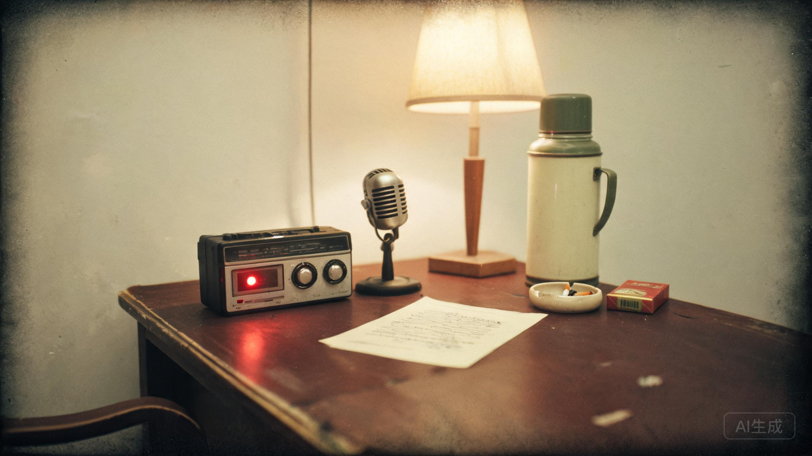

一盘没有编号的采访录音 · 2003年秋
说话的人已于2009年病故。这盘磁带曾被从馆藏目录里撤下。

00:00 （录音机按键声。茶杯盖碰了一下桌面。）
00:02 问：您是1985年到1998年的厂长？
00:06 郑：厂长。副的。正的调走了，一直没来人。
00:31 问：1987年那批“安宁”营养剂，您签过字？
00:40 郑：签过。十七个人。都是厂里的职工，家里困难的，来报名，管饭，还有补贴。李素芬是第三个。我记得。她男人是仓库的老陈。
01:12 郑：那时候不知道。真不知道。药是上面给的，说是营养剂。
01:48 问：后来知道了？
01:53 郑：（长时间停顿）她生第二个孩子的时候，血止不住。医院的人问我，她吃过什么。
02:26 郑：我把名单锁进了冷库。锁了十年。
03:04 问：1998年10月7日晚上，陈卫东来找过您？
03:11 郑：来过。九点多。他穿着工作服，手里拿着一把枪。
03:19 问：真枪？
03:23 郑：塑料的。人民商场买的，三块五。他把枪口顶在我这儿（拍胸口声），说：“名单给我。我老婆在第三行。”
03:51 郑：他没要钱。他要名单。我说名单在冷库，二十二点封门，谁也不能进。他说：“那我去把它拿出来。”
04:20 郑：我看着他下楼。然后我给保卫科打了个电话。
04:31 问：您说了什么？
04:35 郑：我说，把地下层的门从外面锁上。二十二点整，一分钟也不要早。
05:02 问：您知道他还在里面？
05:09 郑：（停顿）登记簿上写着“里面有人”。保卫科的人问我开不开。我说，不开。
05:40 郑：我以为他会自己出来。通风口，他知道通风口。老陈在厂里干了二十年，哪个洞通哪儿他比我清楚。
06:18 问：他没有出来。
06:22 郑：他没有出来。
06:40—39:50 （大段与案件无关的内容：厂里的改制、地皮、职工的安置费。受访人反复提到“我只是不想让厂里出事”。）
39:58 问：您后来去过那个冷库吗？
40:07 郑：拆楼那天我去过。站在警戒线外面。楼倒下来的时候，声音很闷，像一口锅盖扣在地上。
40:31 问：您有没有想过，他可能还活着？
40:39 郑：（很轻）有时候夜里，我听见楼上有脚步声。很轻。鞋底沾着灰的那种声音。
40:58 郑：你们采访完了没有。我锅里还熬着粥。
41:05 （椅子挪动。脚步远去。录音机没有关。）
41:09 （很远的厨房里，锅盖被掀开。勺子碰到碗沿，三下。）
41:12 一个女人的声音，很轻：“粥别熬太久。”
郑国华在口述里承认了两件事：名单是他签的字；二十二点封门，是他下的令。
他坚持说自己“只是不想让厂里出事”。他没说出口的是——那天夜里，他知道地下层还有人，他知道那个人是谁，他知道那个人家里有妻子和儿子。
“我锅里还熬着粥。”这句话之后，录音没有停。档案馆做过核验：郑国华家当天没有别人，他妻子1997年就去世了。41分12秒出现的那个女声，不在采访现场，也不在1998年的任何一份职工名册里。
而她说的话，和磁带 A 面 00:41 的那一句，一个字都不差。